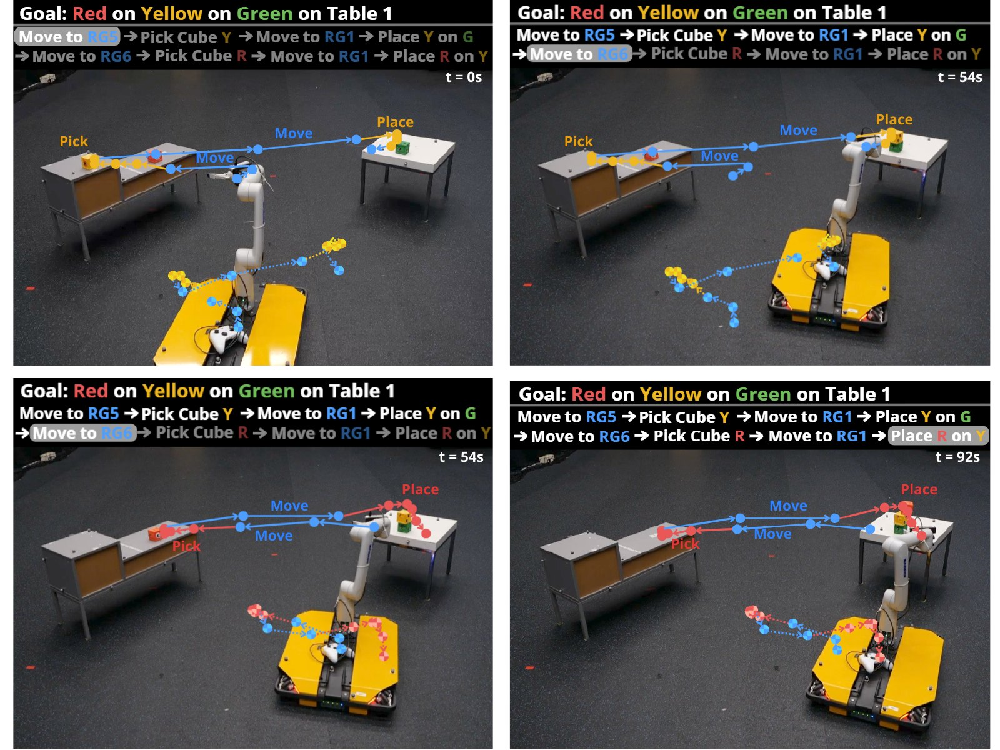
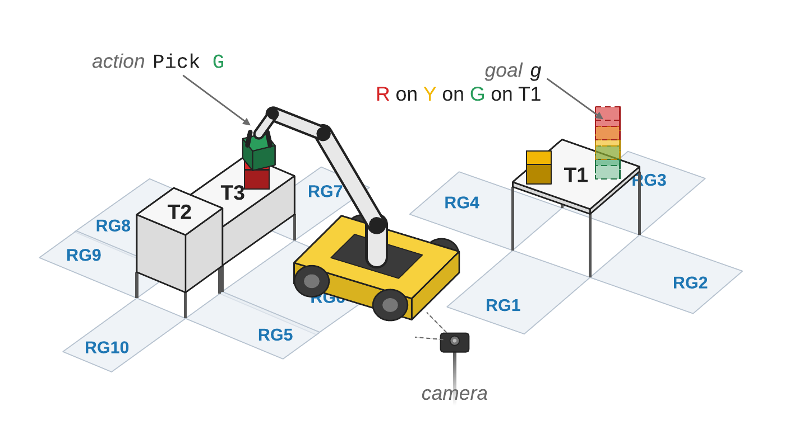
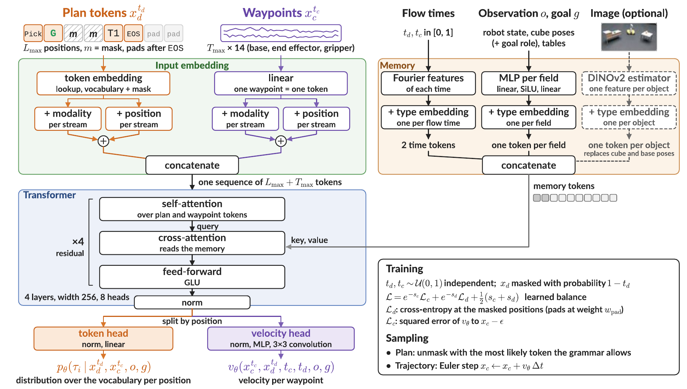
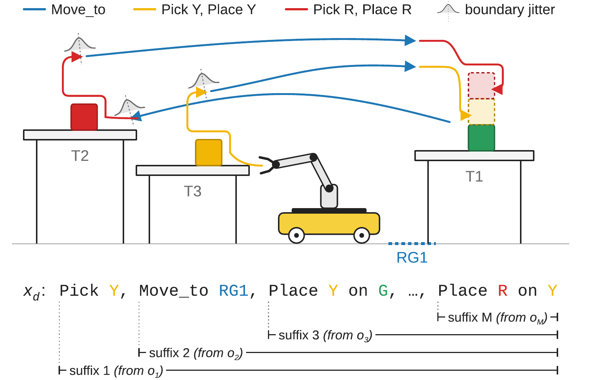
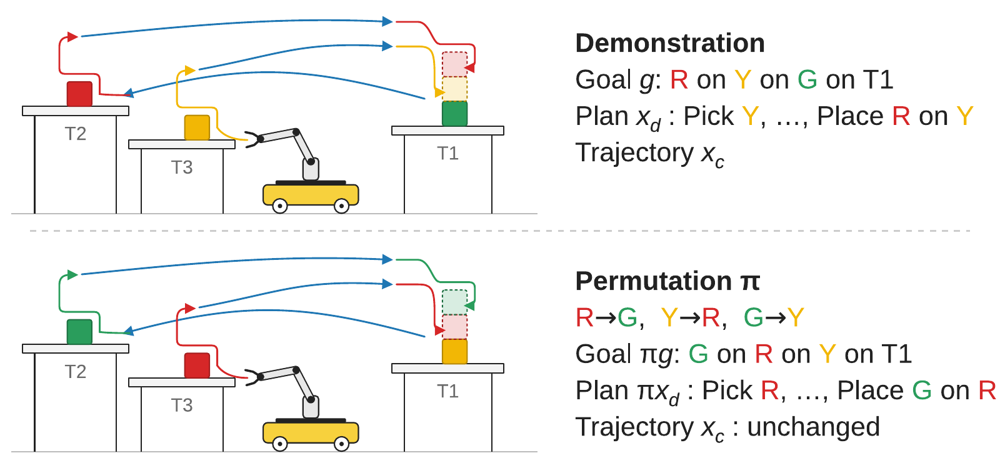
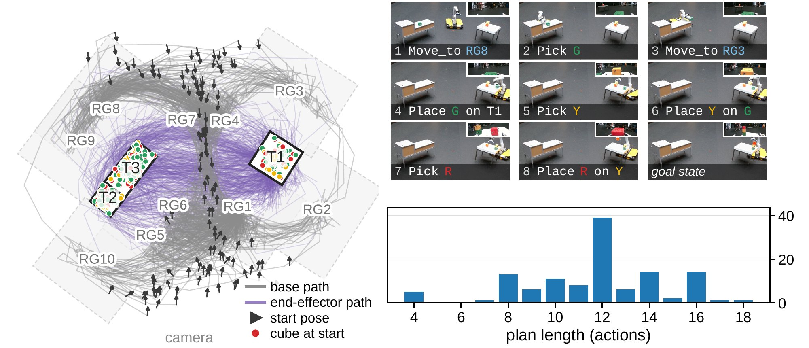
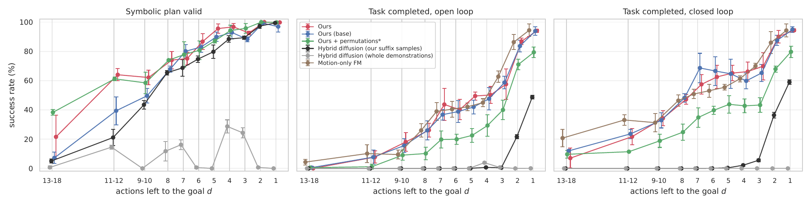
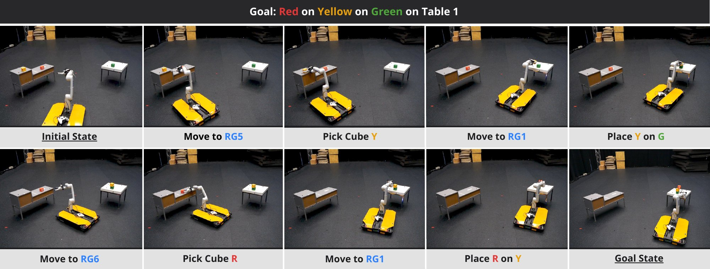
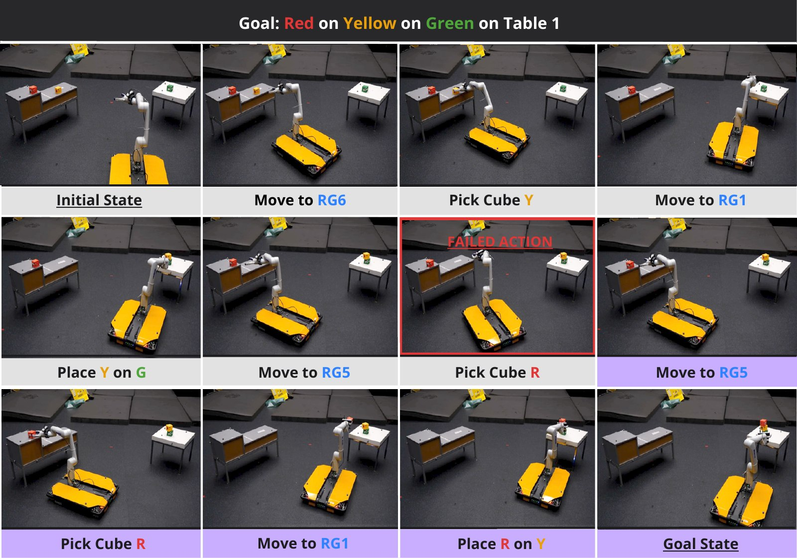

Long-horizon mobile manipulation requires a task plan and the motion that executes it.
Generative planners trained on demonstration produce both in one pass, requiring neither a symbolic domain nor search.
To date, however, they have relied on thousands of scripted demonstrations of fixed-base arms and executed open loop.
This paper presents a hybrid flow matching planner: a single network generates the symbolic plan with masked discrete flow matching and the motion trajectory with continuous flow matching.
Unlike prior generative planners, we aim to learn from a much smaller set of demonstrations and to execute the plan in closed loop.
Two properties of the data compensate for the small dataset.
A demonstration resumed from any of its intermediate actions is itself a demonstration, which multiplies the training samples and enables replanning after every action.
Objects of the same kind are interchangeable, which turns demonstrations of one goal into demonstrations of every permuted goal.
Our base implementation produces valid plans on 68% of held-out scenes; a training and generation scheme for the discrete plan raises this to 76%, and replanning after every action raises the task completion rate from 40% to 53% in a kinematic simulation.
The planner matches the task completion rate of motion-only flow matching policies while additionally providing the symbolic plan, and it outperforms previous hybrid diffusion formulations on both task completion and plan validity.
We validate the planner on a real mobile manipulator.
Overview

Four frames of one run on the real robot. Each frame shows the plan generated from that scene, with the action in progress highlighted, and the generated waypoints of the base and the end effector.
Given an observation of the scene, with the poses of the robot, the cubes, and the tables, one transformer generates the symbolic plan (for example Move_to RG5, Pick Y, Place Y G) and the waypoints of the mobile base and the end effector that execute it.
The plan is generated with masked discrete flow matching and the waypoints with continuous flow matching, in the same generation pass.
The planner is trained on 109 teleoperated demonstrations.
Every demonstration is also used from each of its intermediate actions onward, so the robot can replan after every action: it executes one action, observes the new scene, and generates a new plan.
Renaming the cubes consistently in a demonstration gives demonstrations of the other tower orders.
Problem

The running example. Three cubes R, Y, and G on tables T1–T3, with approach regions RG1–RG10 along the table sides. The goal is the tower R on Y on G on T1 (ghost cubes).
A task is an observation $o$ of the scene, with the poses of the robot and of every cube, and a symbolic goal $g$.
A solution has two aligned levels: a symbolic plan of $M$ actions $\sigma = (a_1, \ldots, a_M)$ and a trajectory $x_c = (x_{c,1}, \ldots, x_{c,M})$, where the segment $x_{c,k}$ realizes the action $a_k$.
A waypoint is the commanded robot state: the base pose, the end-effector pose, and the gripper command.
Move_to takes an approach region, Pick a cube, and Place the held cube and a support, either a cube or a table.
From demonstrations we learn a generative model $p_\theta(x_d, x_c \mid o, g)$, where $x_d$ is the plan as a token sequence.
A sampled plan must be grammatical, valid for the task, and successful when its trajectory is executed.
Method

The network. The plan tokens and the waypoints form one sequence for the transformer. Its cross-attention reads one token per flow time and one per observation component. The token head gives the token distribution at every plan position and the velocity head the velocity at every waypoint.
Hybrid flow matching
The symbolic plan is generated with masked discrete flow matching, from a fully masked sequence.
The trajectory is generated with continuous flow matching, from noise.
Both flows run in parallel through the same network, so each modality conditions the other while it is generated.
Each flow has its own time, $t_d$ and $t_c$, from 0 (noise) to 1 (data).
Training and generation scheme for the plan
Grammar-constrained reveal. A masked position is revealed only to a token that the plan grammar allows under every completion of its prefix. A token that becomes invalid after its left context changes is masked and predicted again.
Freeze after the end token. Once an end token is visible, no position after it is revealed.
Pad supervision. The pad tokens after the plan are masked and supervised with the plan, so the network learns where a plan of any length ends.
Learned loss balance. The discrete and continuous losses differ in scale and evolve differently during training. Uncertainty weighting learns their balance.
Two augmentations from the structure of the data

Plan suffixes. The remainder of a demonstration after any action is itself a valid demonstration from the intermediate observation $o_k$. A demonstration of $M$ actions gives $M$ training samples. The same samples let the robot replan after every action: it executes the first action, observes the new scene, and generates a new plan from there.

Object permutations. The cubes are interchangeable. A consistent renaming of the cubes in the goal, the plan, and the observation gives a demonstration of another tower order with the same trajectory. Trained on the six permutations, the planner builds any tower order.
Experimental setup

The 109 (+12 validation) demonstrations. Left: top view with the base paths (grey), the end-effector paths (violet), the start poses, and the initial cube positions. Right: one demonstration at its action boundaries, with the actions, the wrist-camera views, and the distribution of plan lengths.
Robot. A holonomic mobile base (Clearpath Dingo-O) with a six-joint arm (Kinova Gen3 Lite). Three cubes with a side of 6.5 cm, three tables of different heights and sizes.
Demonstrations. 109 teleoperated demonstrations for training and 12 held out for validation, with the cube and robot poses from motion capture. They contain 4 to 18 actions and 17 to 69 waypoints, about 0.8 s apart.
Network. A transformer with four layers of width 256, 7.5 million parameters, trained in about 20 minutes on one RTX 3090. Generation uses 100 steps.
Metrics. A plan is valid under a symbolic model of the task. Execution runs in a kinematic simulation; a task is completed when the goal tower stands. Open loop executes the whole sampled trajectory; closed loop executes one action and replans.
The demonstrations, played one after the other, with the base and end-effector paths on the right.
Results
Comparison on the held-out demonstrations
Policy
Symbolic plan valid (%)
Task completed (%)
all $d$
$d \geq 13$
open loop
closed loop
Motion-only flow matching
–
–
39 ± 2
52 ± 2
Hybrid diffusion, whole demonstrations
8 ± 1
1
0
0
Hybrid diffusion, our suffix samples
62 ± 1
5
6 ± 0
9 ± 0
Ours
76 ± 1
33
40 ± 3
53 ± 3
Ours + permutations*
76 ± 1
53
26 ± 3
36 ± 3
12 held-out demonstrations, mean and standard deviation over 3 training seeds, 50 samples per task. $d$ is the number of actions left to the goal. Hybrid diffusion is the formulation of Høeg et al. (2025) on our network and data. *Goal-conditioned: trained on all six tower orders, scored on the recorded one.

Success against the number of actions left to the goal $d$. Left: the sampled plan is valid. Middle: the tower stands after the whole sampled trajectory is executed. Right: the tower stands when the policy replans after every action.
Plans. Our planner produces valid plans in about three quarters of the samples. Validity is near perfect with four or fewer actions left and falls to about one third beyond 13 actions. On training demonstrations of similar length, validity stays above 95% up to 17 actions, so the long-horizon failures come from unseen scenes.
Execution. Our planner completes the task as often as motion-only flow matching and adds the symbolic plan, replanning at action level, and goal conditioning. Most execution failures are grasps or placements off by a few centimeters.
Closed loop. Replanning after every action raises the task completion rate from 40% to 53%, and from 0 to 10–30% at long horizons.
Hybrid diffusion. Trained on our suffix samples, it plans nearly as well as our base implementation, but its trajectories do not reach the cubes: the median end-effector error is 0.71 m against 0.25 m for ours.
The scheme one step at a time
From our base implementation
Plan valid (%)
$d \geq 13$
Closed loop (%)
Unconstrained generation
55 ± 1
5
41 ± 4
+ grammar and freeze (base)
68 ± 2
10
53 ± 5
+ pad supervision
71 ± 4
20
53 ± 3
+ learned loss balance = Ours
76 ± 1
33
53 ± 3
Grammar-constrained generation and the freeze after the end token raise plan validity from 55% to 68%, and the closed-loop task completion rate from 41% to 53%: a rollout that ends in an ungrammatical plan cannot continue. Pad supervision and the learned loss balance raise validity to 76% overall and to 33% beyond 13 actions. The open-loop task completion rate changes little; the scheme acts on the plan, not on the motion.
Recovery in the kinematic simulation
Two held-out tasks, with 7 and 10 actions left to the goal. Left of each clip: the whole sampled trajectory executed open loop, which does not build the tower. Right: the same policy replanning after every action, which builds it.
Real robot
The policy runs on the robot from the motion capture poses.
The end-effector waypoints are converted to joint targets by inverse kinematics, the base waypoints go to the base controller, and the policy replans after every action.
In 30 unseen cube placements, the robot built the tower in about 30% of the runs from short plans ($d \leq 6$) and in 10% from long ones ($d \geq 8$).
The failures are the same as in the kinematic simulation: grasps missed by a few centimeters and placements off the support.
Building the tower
The goal is R on Y on G on table T1. The overlay shows the current plan, with the action in progress highlighted. Every action succeeds, so the plan stays the same from one planning step to the next. 4× speed.

A run in frames, one per action. After every action the policy observes the new scene and samples a new plan and trajectory.
Replanning after a missed grasp
The grasp of R misses. At the next planning step, the policy sees R still on the table, plans the pick again, and finishes the tower. 4× speed.

The same run as frames. The failed pick is marked in red; the replanned actions follow it.
Goal-conditioned policy
The policy trained with object permutations builds the tower Y on R on G, an order that no demonstration shows. 4× speed.
Common failures
Unstable placement. The cube is released off the support when stacking.
Missed grasp. The gripper closes a few centimeters from the cube.